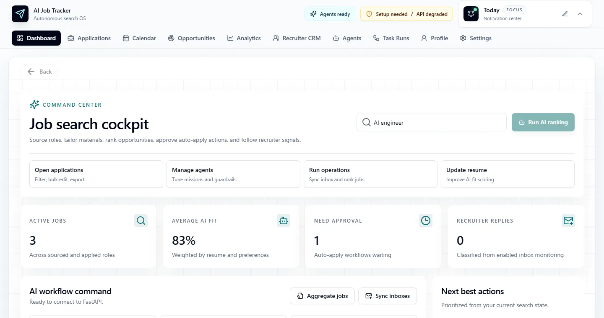

NEXT.JS / FASTAPI / CREWAI
Codex Job Tracking App
A full-stack command center that aggregates job listings, ranks fit with AI, and runs approval-gated auto-apply with a multi-agent crew.

Why it exists
Job hunting is fragmented across half a dozen tools — boards, inboxes, ATS portals, recruiter messages, spreadsheets to track it all. This Next.js + FastAPI app pulls everything into one cockpit and uses a CrewAI multi-agent system to do the search end-to-end: scrape postings, score fit with OpenAI, tailor a résumé per role, watch Gmail and Outlook for replies, and submit applications with a human approval gate. The cockpit above shows the live state — active jobs, average AI fit, recent recruiter replies, and pending approvals all at-a-glance.